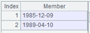
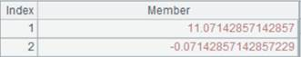

range(s,e,k:n)
Description:
Get the beginning members of the specified segment and its next segment.
Syntax:
range(s,e,k:n)
Note:
The function evenly divides an interval defined by starting data s and ending data e (both parameters can be integers) into n segments and returns the beginning member of the kth segment and that of the (k+1)th segment as a two-member sequence. The precision of the retunred data is determined by the date type. For example, the maximum precision date type data is day, and that of datetime data is second. If parameter k is absent, return the beginning members and ending members of all segments, which means the returned sequence will have n+1 members.
Parameter:
|
s |
Starting data |
|
e |
Ending data |
|
k |
The kth segment whose beginning member is to be returned |
|
n |
The number of segments data is divided |
Return value:
A sequence
Example:
|
|
A |
|
|
1 |
=range(date("1982-08-09"),date("1992-08-09"),2:3) |
The max precison of the date data is day  |
|
2 |
=range(datetime("2006-01-01 10:20:30:111"),datetime("20016-01-01 10:20:30:111"),2:3) |
The max precison of the datetime data is second  |
|
3 |
=range(1,9,2:3) |
Parameter s and e are integers
|
|
4 |
=range(date("1982-08-09"),date("1992-08-09"),3) |
As parameter k is absent, return the beginning members and ending members of all segments
|